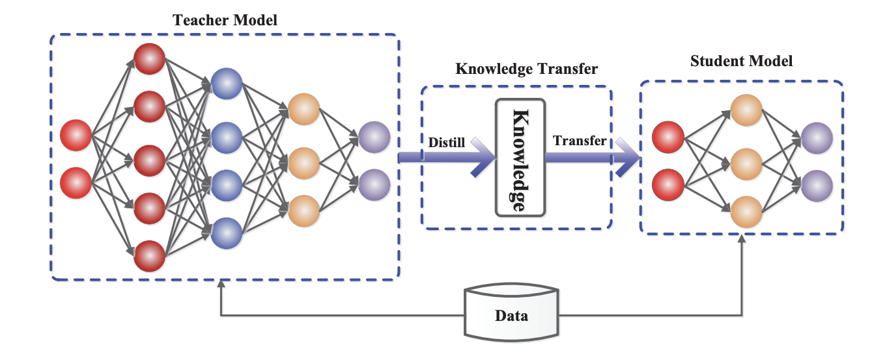
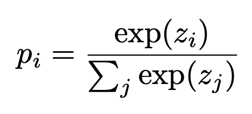
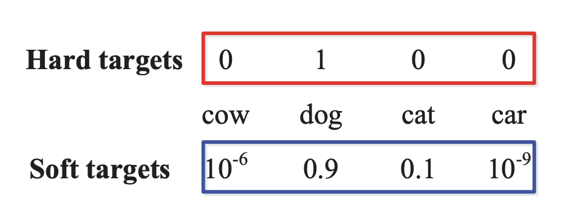
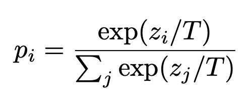
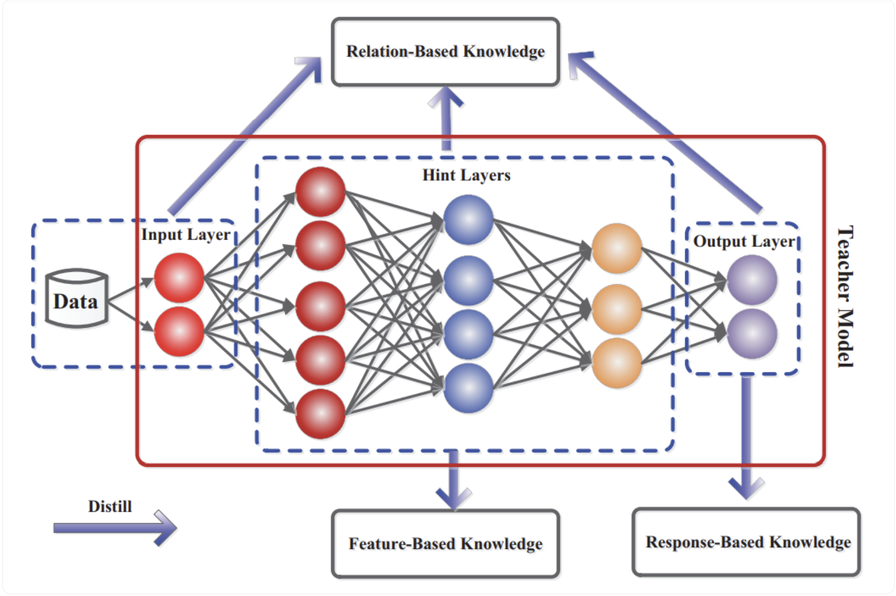

从数据工程视角回顾本节：
• 蒸馏：设计并持续维护高质量的 Teacher 推理数据集
• 量化：准备覆盖核心场景的校准/训练数据，关注多样性
• 剪枝：与蒸馏/微调共用数据集，额外关注剪枝前后性能对比
在不牺牲太多效果的前提下，把模型变「小、快、省」，重点拆解蒸馏及其数据构建方法。
| 方法 | 核心思想 | 主要改动 | 典型收益 | 对数据的要求 |
|---|---|---|---|---|
| 知识蒸馏 | 用大模型（教师）的行为去「教」小模型（学生） | 重新训练一个小模型 | 尺寸 ↓，延迟 ↓，效果接近教师 | 高质量教师推理数据 |
| 量化 | 用更少 bit 表示权重/激活（如 FP16 → INT4） | 数值表示方式改变 | 显存 ↓，吞吐 ↑，效果轻微下降 | 可选少量校准 / 量化训练数据 |
| 剪枝 | 剪掉对结果贡献小的权重/通道/头 | 结构变稀疏或变浅/变窄 | 参数量 ↓，有时推理略加速 | 需要评估重要性的数据或指标 |

直观理解：我们不是让小模型「重新做一遍预训练」，而是尽量模仿大模型的行为，尤其是在我们关心的任务分布上。
首先，需要澄清什么是 softmax。
Softmax 是一种在机器学习中常用的数学函数，尤其在神经网络中，用于将原始分数（称为 logits）转换为概率。它通过确保输出值之和为 1，使模型能够判断输入属于哪个类别，并将输出解释为概率。

Softmax 中的一个重要参数是温度（T）——它用来控制模型预测的置信度或不确定性，调节概率分布的「尖锐程度」：要么更置信（尖锐），要么更不确定（柔和）。当 T = 1 时，是默认设置，对应标准的 softmax 行为，此时只有正确答案获得 100% 的概率，softmax 产生的是 hard targets（硬标签）。当温度升高（T > 1）时，softmax 产生 soft targets（软标签），即概率分布更加分散、更「软」。


Soft targets 对蒸馏和训练很有用，下面的知识蒸馏过程会说明原因。它通常包括以下步骤：
首先，教师模型在原始任务和数据集上训练。接着，教师模型产生 logits，这些 logits 通过带较高温度的 softmax 函数转换为 soft targets，使概率分布更软。然后，学生模型通常在这些 soft targets 以及 hard targets（真实标签）上训练，通过最小化学生输出分布与教师输出分布之间的差异来学习。

| 类型 | 目标 | Loss/约束 | 典型使用场景 |
|---|---|---|---|
| Response-Based KD（响应蒸馏） | 对齐教师的最终输出分布/预测结果 | KL/CE：对齐 logits 或 soft targets（softmax+temperature） | 分类、检索打分；LLM 的 logit 蒸馏、sequence-level 蒸馏 |
| Feature-Based KD（特征蒸馏） | 对齐中间层表征（hint layers / hidden states / attention 等） | MSE / cosine / attention matching 等表征约束 | CNN/Transformer 压缩；希望学生复用教师的内部表征能力 |
| Relation-Based KD（关系蒸馏） | 对齐样本间/特征间的相对关系（相似度、距离、排序结构） | pairwise/graph/metric 约束：保持关系结构一致 | 度量学习、检索、结构化表示学习；强调“结构知识”迁移 |
| Preference Distillation（偏好蒸馏）[1][2] | 对齐「输出的相对好坏/排序偏好」而非只对齐单个输出 | 排序/偏好损失：ranking loss、DPO/PO 类 pairwise objective | LLM 对齐能力向小模型迁移；当教师不可提供完整 logits/内部状态时尤其常用 |
补充说明：Response/Feature/Relation 的三分法是很多蒸馏综述里常用的基础 taxonomy。[3]「偏好蒸馏」更常见于大模型对齐语境：通过偏好对（winner/loser）或伪偏好对，把“教师更喜欢什么样的回答”迁移给学生。[1][2]
延伸课外阅读：
核心区别在于：学生模型对教师模型的访问权限不同。
| 维度 | 白盒蒸馏（White-Box） | 黑盒蒸馏（Black-Box） |
|---|---|---|
| 访问权限 | 可访问教师的内部信息：例如 logits/概率分布、隐藏状态（hidden states）等。 | 通常只能拿到教师的文本输出（例如通过 API 调用），无法访问 logits/参数。 |
| 典型做法 | 对齐分布：用 KL divergence 等让学生匹配教师的输出分布（可做 forward / reverse 形式）。 | SeqKD：把教师生成的文本当作监督信号做 SFT，让学生“模仿回答”。 |
| 优势 | 监督信号更细粒度（概率级），学习效率通常更高。 | 适用面更广：适配闭源教师；并且不依赖 logits 对齐，对Tokenizer 不兼容更友好。 |
| 局限 | 很多最强教师是闭源的，现实中拿不到 logits/内部状态。 | 仅靠离线模仿文本时，缺少“针对学生自身生成质量的反馈”，容易出现幻觉或过拟合局部模式。 |
| 数据源 | 获取方式 | 优点 | 风险/注意事项 |
|---|---|---|---|
| 现有 SFT/对齐数据 | 直接复用你用于训练大模型/Teacher 的数据 | 分布一致、质量已验证 | 容易「信息重复」，要注意样本多样性 |
| 业务真实请求日志 | API 网关 / 机器人对话日志 | 最贴近真实业务分布 | 需要脱敏、清洗；要过滤脏请求/攻击 |
| 合成请求（Prompt 生成） | 用大模型生成多样化 query 模板 | 快速覆盖长尾场景 | 要控制质量，避免无意义/重复请求 |
| 难例挖掘数据 | 从线上监控、评测集中挖出表现差的 case | 对提升效果最有价值 | 量不一定大，但要重点采样 |
最常见的是把教师回答直接当作学生的 supervised 标签，和 SFT 数据结构基本一致：
{
"instruction": "请根据下游任务日志，帮我总结关键错误原因",
"input": "<这里是真实或合成的日志片段...>",
"output": "<来自教师模型的高质量总结>", // Teacher 回答
"meta": {
"source": "prod-log-v1", // 数据来源
"teacher_model": "qwen-max-2025-01",
"quality_score": 0.92, // 规则/模型打分
"domain": "vehicle-diagnostics"
}
}
和普通 SFT 唯一的区别在于：output 是由 Teacher 生成，而不是由人工标注，但需要配合质量控制与元数据记录。
如果你希望最大化复刻教师的 token 级行为，可以在训练时直接使用教师的 logits/probs 作为监督：
with torch.no_grad(): teacher_logits = teacher(input_ids).logits # [B, T, V] student_logits = student(input_ids).logits # 通常会设置更高的 temperature，放大教师的不确定性信息 T = 1.0 teacher_prob = log_softmax(teacher_logits / T) student_logprob = log_softmax(student_logits / T) kl_loss = KLDivLoss(student_logprob, teacher_prob) ce_loss = CrossEntropyLoss(student_logits, gold_labels) loss = α * kl_loss * (T ** 2) + (1 - α) * ce_loss
这里的数据重点不在格式，而在：需要覆盖尽可能多的任务/分布，让学生在 token 级别学到教师的「犹豫与置信度」。
当你准备启动一个蒸馏项目时，可以对照下面的问题快速盘一遍数据侧是否准备充分：
| 方式 | 说明 | 数据需求 | 优缺点 |
|---|---|---|---|
| PTQ（Post-Training Quantization） | 训练完模型后直接量化权重（如 W4A16） | 少量校准数据或完全无数据 | 实现简单、效果可用、可用于任意的模型 |
| QAT（Quantization-Aware Training） | 在训练/微调阶段加入量化噪音模拟 | 需要完整训练数据或子集 | 效果更好，但训练成本更高 |
如果你需要为 QAT 或高精度 PTQ 准备校准/训练数据，可以遵循：
| 类型 | 粒度 | 效果 | 难点 |
|---|---|---|---|
| 非结构化剪枝 | 按权重大小逐个置零 | 参数量减少，但对 GPU 加速不友好 | 需要特定稀疏库才能加速 |
| 结构化剪枝 | 按通道/头/层整体删除 | 参数和计算量均减少 | 过度剪枝会造成明显性能退化 |
在实践中，剪枝通常搭配 再训练/再微调，而数据来源与普通 SFT/蒸馏类似。
一个常见的组合路线是：
三者并不是互斥关系，而是围绕「效果、成本、延迟」做的多维折中。